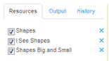

Export and Save Locally
You may save output locally from a Tagger session in three formats
- .csv file
- .json file
- .html file
Select the resources

On the Resources tab, select the resouces for which to save output.
Click Save.

Click Save. The Save sub-menu displays.
Select the appropropriate save option
From the Save sub-menu, select the appropriate option. The Browse dialog opens to enable you to specify the name and location to save the newly created output file.